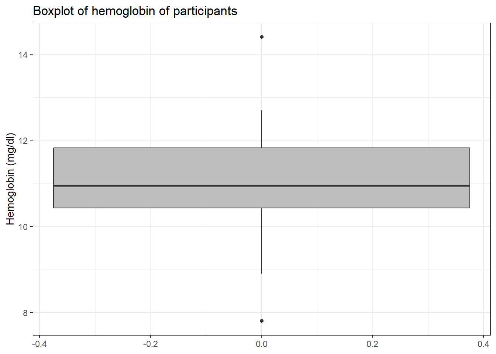

blood3 <- readxl::read_xls("C:/Dataset/blood_donors_2.xls")Data Cleaning
Data to be analysed has to be ”cleaned” first of abnormal or invalid values. This should be done with the understanding of the data at hand, how it was collected in the first place and with very little prejudice or bias. This is a critical stage of the analysis where any arbitrary deletion or insertion of data could significantly alter the conclusions.
It, therefore, goes without saying that all modifications done at the data cleaning stage must have sound statistical, clinical as well as commonsensical reasons to it. Also, the whole process of data cleaning should be well documented and appropriately stored for future reference. In this regard, it is not good practice to edit the data in software such as Microsoft Excel though it may appear easy and tempting. This is because such software does not keep an audit trail.
Data dictionary or codebook
For well-collected and managed data, there should always be a dictionary. The dictionary outlines for every variable in the dataset its variable name, the meaning of the variable, the source of the variable (from the questionnaire, data collection sheet, etc.), the valid ranges or codes and the format. This is an invaluable tool for determining wrong and abnormal entries. It is also sometimes referred to as the codebook.
Importing the data into R
The first step in analysis is to read or import the data into the data analysis software where a general overview can be obtained. We begin by importing the blood_donors_3.dta into R and calling it blood3.
Visualising the data in R
Next, we visualize the data
blood3# A tibble: 25 × 6
id hb hct sex bldgrp pdonor
<dbl> <dbl> <dbl> <dbl> <dbl> <dbl>
1 1 10.5 31.8 1 3 3
2 2 11.9 37.2 1 4 0
3 3 1 26 1 1 1
4 4 8.90 26.8 1 1 3
5 5 7.80 24.2 1 1 2
6 6 10 30.9 1 2 1
7 7 10.4 33.9 1 2 0
8 8 11.3 35 1 3 1
9 9 16.4 NA 1 4 1
10 10 14.4 43.6 1 4 1
# ℹ 15 more rowsTo visualise all the data we can use the print() or View() functions. Note that this might not be the best if you have relatively big data. Below I use the as.data.frame() function to display the whole data.
blood3 %>% as.data.frame() id hb hct sex bldgrp pdonor
1 1 10.5 31.8 1 3 3
2 2 11.9 37.2 1 4 0
3 3 1.0 26.0 1 1 1
4 4 8.9 26.8 1 1 3
5 5 7.8 24.2 1 1 2
6 6 10.0 30.9 1 2 1
7 7 10.4 33.9 1 2 0
8 8 11.3 35.0 1 3 1
9 9 16.4 NA 1 4 1
10 10 14.4 43.6 1 4 1
11 11 11.2 33.2 0 3 99
12 12 11.5 35.5 0 3 1
13 13 10.5 33.7 0 3 2
14 14 12.2 36.8 0 4 1
15 14 16.4 48.8 0 5 2
16 16 12.7 99.0 0 4 0
17 17 9.8 30.5 0 1 4
18 18 10.9 33.8 0 3 0
19 19 11.6 35.4 0 3 3
20 20 10.6 34.9 0 9 2
21 21 9.1 28.0 9 1 3
22 22 11.9 36.1 9 4 3
23 23 10.5 34.2 9 3 2
24 24 12.3 38.2 9 4 2
25 25 11.0 35.7 9 3 2Describing or summarizing the data
We first use the glimpse() function to have a basic view of variable names and variable types
blood3 %>% glimpse()Rows: 25
Columns: 6
$ id <dbl> 1, 2, 3, 4, 5, 6, 7, 8, 9, 10, 11, 12, 13, 14, 14, 16, 17, 18, …
$ hb <dbl> 10.5, 11.9, 1.0, 8.9, 7.8, 10.0, 10.4, 11.3, 16.4, 14.4, 11.2, …
$ hct <dbl> 31.8, 37.2, 26.0, 26.8, 24.2, 30.9, 33.9, 35.0, NA, 43.6, 33.2,…
$ sex <dbl> 1, 1, 1, 1, 1, 1, 1, 1, 1, 1, 0, 0, 0, 0, 0, 0, 0, 0, 0, 0, 9, …
$ bldgrp <dbl> 3, 4, 1, 1, 1, 2, 2, 3, 4, 4, 3, 3, 3, 4, 5, 4, 1, 3, 3, 9, 1, …
$ pdonor <dbl> 3, 0, 1, 3, 2, 1, 0, 1, 1, 1, 99, 1, 2, 1, 2, 0, 4, 0, 3, 2, 3,…We can also use the dfSummary() function from the summarytools package to give a more comprehensive output for each variable.
blood3 %>% summarytools::dfSummary()Data Frame Summary
blood3
Dimensions: 25 x 6
Duplicates: 0
--------------------------------------------------------------------------------------------------------
No Variable Stats / Values Freqs (% of Valid) Graph Valid Missing
---- ----------- ------------------------- -------------------- ------------------- ---------- ---------
1 id Mean (sd) : 13 (7.4) 24 distinct values : : : : : 25 0
[numeric] min < med < max: : : : : : (100.0%) (0.0%)
1 < 13 < 25 : : : : :
IQR (CV) : 12 (0.6) : : : : :
: : : : :
2 hb Mean (sd) : 11 (2.9) 21 distinct values : 25 0
[numeric] min < med < max: : (100.0%) (0.0%)
1 < 11 < 16.4 :
IQR (CV) : 1.5 (0.3) . :
. . : : : . :
3 hct Mean (sd) : 36.8 (14.3) 24 distinct values : 24 1
[numeric] min < med < max: : (96.0%) (4.0%)
24.2 < 34.6 < 99 :
IQR (CV) : 4.7 (0.4) :
: : . .
4 sex Mean (sd) : 2.2 (3.5) 0 : 10 (40.0%) IIIIIIII 25 0
[numeric] min < med < max: 1 : 10 (40.0%) IIIIIIII (100.0%) (0.0%)
0 < 1 < 9 9 : 5 (20.0%) IIII
IQR (CV) : 1 (1.6)
5 bldgrp Mean (sd) : 3.1 (1.7) 1 : 5 (20.0%) IIII 25 0
[numeric] min < med < max: 2 : 2 ( 8.0%) I (100.0%) (0.0%)
1 < 3 < 9 3 : 9 (36.0%) IIIIIII
IQR (CV) : 2 (0.5) 4 : 7 (28.0%) IIIII
5 : 1 ( 4.0%)
9 : 1 ( 4.0%)
6 pdonor Mean (sd) : 5.6 (19.5) 0 : 4 (16.0%) III 25 0
[numeric] min < med < max: 1 : 7 (28.0%) IIIII (100.0%) (0.0%)
0 < 2 < 99 2 : 7 (28.0%) IIIII
IQR (CV) : 2 (3.5) 3 : 5 (20.0%) IIII
4 : 1 ( 4.0%)
99 : 1 ( 4.0%)
--------------------------------------------------------------------------------------------------------Cleaning individual variables
We note that all the variables are of type “double”. sex and bldgrp however, should be factors. This is done and subsequently summarized below.
blood3 <-
blood3 %>%
mutate(sex = factor(sex,
levels = c(0,1,9),
labels = c("Female", "Male", "Missing")),
bldgrp= factor(bldgrp,
levels = c(1, 2, 3, 4, 9),
labels = c("A", "B", "O", "AB", "Missing")))
blood3 %>% summarytools::dfSummary()Data Frame Summary
blood3
Dimensions: 25 x 6
Duplicates: 0
--------------------------------------------------------------------------------------------------------
No Variable Stats / Values Freqs (% of Valid) Graph Valid Missing
---- ----------- ------------------------- -------------------- ------------------- ---------- ---------
1 id Mean (sd) : 13 (7.4) 24 distinct values : : : : : 25 0
[numeric] min < med < max: : : : : : (100.0%) (0.0%)
1 < 13 < 25 : : : : :
IQR (CV) : 12 (0.6) : : : : :
: : : : :
2 hb Mean (sd) : 11 (2.9) 21 distinct values : 25 0
[numeric] min < med < max: : (100.0%) (0.0%)
1 < 11 < 16.4 :
IQR (CV) : 1.5 (0.3) . :
. . : : : . :
3 hct Mean (sd) : 36.8 (14.3) 24 distinct values : 24 1
[numeric] min < med < max: : (96.0%) (4.0%)
24.2 < 34.6 < 99 :
IQR (CV) : 4.7 (0.4) :
: : . .
4 sex 1. Female 10 (40.0%) IIIIIIII 25 0
[factor] 2. Male 10 (40.0%) IIIIIIII (100.0%) (0.0%)
3. Missing 5 (20.0%) IIII
5 bldgrp 1. A 5 (20.8%) IIII 24 1
[factor] 2. B 2 ( 8.3%) I (96.0%) (4.0%)
3. O 9 (37.5%) IIIIIII
4. AB 7 (29.2%) IIIII
5. Missing 1 ( 4.2%)
6 pdonor Mean (sd) : 5.6 (19.5) 0 : 4 (16.0%) III 25 0
[numeric] min < med < max: 1 : 7 (28.0%) IIIII (100.0%) (0.0%)
0 < 2 < 99 2 : 7 (28.0%) IIIII
IQR (CV) : 2 (3.5) 3 : 5 (20.0%) IIII
4 : 1 ( 4.0%)
99 : 1 ( 4.0%)
--------------------------------------------------------------------------------------------------------Checking for duplicated records
We begin official data cleaning by checking if we have duplicate records in our data
blood3 %>% janitor::get_dupes()No variable names specified - using all columns.No duplicate combinations found of: id, hb, hct, sex, bldgrp, pdonor# A tibble: 0 × 7
# ℹ 7 variables: id <dbl>, hb <dbl>, hct <dbl>, sex <fct>, bldgrp <fct>,
# pdonor <dbl>, dupe_count <int>Cleaning individual variables
Next, we begin to sort the variables one by one. We begin with the study id variable. We begin by looking for duplicated study ids.
blood3 %>% janitor::get_dupes(id)# A tibble: 2 × 7
id dupe_count hb hct sex bldgrp pdonor
<dbl> <int> <dbl> <dbl> <fct> <fct> <dbl>
1 14 2 12.2 36.8 Female AB 1
2 14 2 16.4 48.8 Female <NA> 2Study id 14 is duplicated! Next, we visually inspect the study ids
blood3$id [1] 1 2 3 4 5 6 7 8 9 10 11 12 13 14 14 16 17 18 19 20 21 22 23 24 25It looks like the study ids are in numeric order from 1 to 25 but 14 is duplicated while 15 is missing. We solve this by writing a new study id variable. Afterwards, we check to see if there are any more duplicates.
blood3 <-
blood3 %>%
mutate(id = 1:25)
blood3 %>% janitor::get_dupes(id)No duplicate combinations found of: id# A tibble: 0 × 7
# ℹ 7 variables: id <int>, dupe_count <int>, hb <dbl>, hct <dbl>, sex <fct>,
# bldgrp <fct>, pdonor <dbl>Next, we inspect the hb variable with a summary and a boxplot. We observe from the summary none of the haemoglobin observations is missing. The boxplot of the hb is as shown in A below. We observe 4 are outliers and one looks very extreme.
blood3 %$% summary(hb) Min. 1st Qu. Median Mean 3rd Qu. Max.
1.00 10.40 11.00 10.99 11.90 16.40 A <-
blood3 %>%
ggplot(aes(y = hb)) +
geom_boxplot(fill = "grey") +
labs(y = "Hemoglobin (mg/dl)",
title = "Boxplot of hemoglobin of participants
with outliers") +
theme_bw()We convert this observation to missing as below.
blood3 <-
blood3 %>%
mutate(hb = ifelse(hb < 4, NA, hb))B <-
blood3 %>%
ggplot(aes(y = hb)) +
geom_boxplot(fill = "grey") +
labs(y = "Hemoglobin (mg/dl)",
title = "Boxplot of hemoglobin of participants
after outlier removed") +
theme_bw()
A + B + plot_annotation(tag_levels = 'A')Warning: Removed 1 row containing non-finite outside the scale range
(`stat_boxplot()`).And redraw the boxplot without the outlier.
blood3 %>%
drop_na() %>%
ggplot(aes(y = hb)) +
geom_boxplot(fill ="grey") +
labs(y = "Hemoglobin (mg/dl)",
title = "Boxplot of hemoglobin of participants") +
theme_bw()
Next, we focus on the hct variable. It is of note that it has 99 which represents ‘missing’. We therefore remove that as below
blood3 <-
blood3 %>%
mutate(hct = ifelse(hct >90, NA, hct))And draw the boxplot below
blood3 %>%
drop_na(hct) %>%
ggplot(aes(y = hct)) +
geom_boxplot(fill = "grey")+
labs(y = "Hematocrit (%)",
title = "Boxplot of hematocrit of participants") +
theme_bw()
Because we know the hematocrit has a relationship with the haemoglobin, we use a scatter plot to visualise and possibly pick up suspicious data.
blood3 %>%
drop_na(hb, hct) %>%
ggplot(aes(x = hct, y = hb)) +
geom_point(col = "red") +
labs(x = "Hematocrit (%)",
y = "Hemoglobin (mg/dl)",
title = "Scatterplot showing the relationship
between the hematocrit and hemoglobin")+
theme_bw()
Next, we inspect the sex variable
blood3 %>%
count(sex)# A tibble: 3 × 2
sex n
<fct> <int>
1 Female 10
2 Male 10
3 Missing 5We then convert the “Missing” category to NA
blood3 <-
blood3 %>%
mutate(sex = fct_recode(sex, NULL = "Missing"))And then check
blood3 %>%
count(sex)# A tibble: 3 × 2
sex n
<fct> <int>
1 Female 10
2 Male 10
3 <NA> 5Next, we sort out the bldgrp variable
blood3 %>%
count(bldgrp)# A tibble: 6 × 2
bldgrp n
<fct> <int>
1 A 5
2 B 2
3 O 9
4 AB 7
5 Missing 1
6 <NA> 1We convert Missing to NA and visualize the variable
blood3 <-
blood3 %>%
mutate(bldgrp = fct_recode(bldgrp, NULL = "Missing"))
blood3 %>% count(bldgrp)# A tibble: 5 × 2
bldgrp n
<fct> <int>
1 A 5
2 B 2
3 O 9
4 AB 7
5 <NA> 2Next, we sort out the pdonor
blood3 <-
blood3 %>%
mutate(pdonor = ifelse(pdonor == 99, NA, pdonor))Visualising the cleaned data
Finally, we summarize the data below
blood3 %>%
summarytools::dfSummary()Data Frame Summary
blood3
Dimensions: 25 x 6
Duplicates: 0
--------------------------------------------------------------------------------------------------
No Variable Stats / Values Freqs (% of Valid) Graph Valid Missing
---- ----------- ------------------------ -------------------- -------------- ---------- ---------
1 id Mean (sd) : 13 (7.4) 25 distinct values : : : : : 25 0
[integer] min < med < max: (Integer sequence) : : : : : (100.0%) (0.0%)
1 < 13 < 25 : : : : :
IQR (CV) : 12 (0.6) : : : : :
: : : : :
2 hb Mean (sd) : 11.4 (2) 20 distinct values : 24 1
[numeric] min < med < max: : (96.0%) (4.0%)
7.8 < 11.1 < 16.4 :
IQR (CV) : 1.5 (0.2) . :
. : : : . :
3 hct Mean (sd) : 34.1 (5.4) 23 distinct values : 23 2
[numeric] min < med < max: : . (92.0%) (8.0%)
24.2 < 34.2 < 48.8 : :
IQR (CV) : 4.6 (0.2) . : :
. : : : . .
4 sex 1. Female 10 (50.0%) IIIIIIIIII 20 5
[factor] 2. Male 10 (50.0%) IIIIIIIIII (80.0%) (20.0%)
5 bldgrp 1. A 5 (21.7%) IIII 23 2
[factor] 2. B 2 ( 8.7%) I (92.0%) (8.0%)
3. O 9 (39.1%) IIIIIII
4. AB 7 (30.4%) IIIIII
6 pdonor Mean (sd) : 1.7 (1.1) 0 : 4 (16.7%) III 24 1
[numeric] min < med < max: 1 : 7 (29.2%) IIIII (96.0%) (4.0%)
0 < 2 < 4 2 : 7 (29.2%) IIIII
IQR (CV) : 1.2 (0.7) 3 : 5 (20.8%) IIII
4 : 1 ( 4.2%)
--------------------------------------------------------------------------------------------------Generating new variables
Often after cleaning individual variables a data analyst will be required to generate new variables from the old ones. We will put this into practice by generating the presence of Anemia if the hb is less than 11g/dl.
```{r comment=NA} blood3 <- blood3 %>% mutate(anemia = case_when(hb < 11 ~ “Yes”, hb >= 11 ~ “No”) %>% factor())
summarytools::dfSummary(blood3)